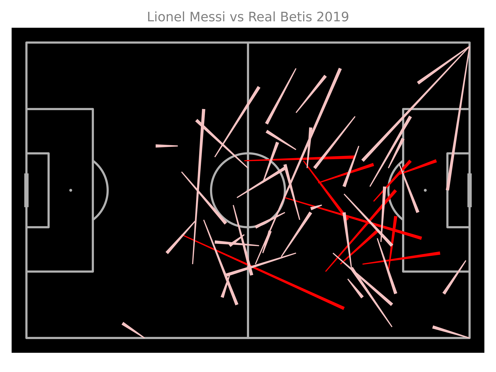
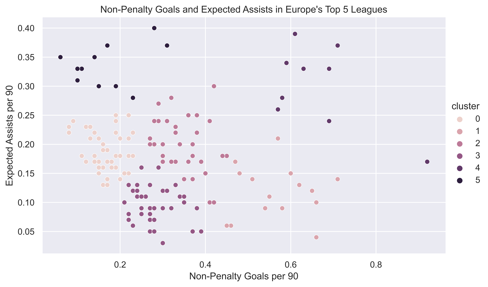

Analysing the relationship between Economic factors and Mens and Womens National Football Team Performance
Introduction
.
Choropleth Map
This Choropleth Map shows the percentage difference between each country's Men's and Women's national team with a higher number representing a better Mens team compared to Womens. It shows a high number of countries in Africa and the Middle East with a much higher ranked Men's team compared to their Women's, as well as this there are a number of Country's without data in these regions which is due to them not having a ranked Women's team further illustrating the dominance of Men's football in these areas. In contrast East and Southeast Asia stand out as regions with relatively higher ranked Women's teams compared to their Men's
'Lionel Messi Pass Map
This chart shows Lionel Messi's progressive and non progressive passes, calculated using numpy to determine if a pass moved the ball 25% closer to the goal.
European Top 5 League Creative and Goalscoring Output Analysis
This chart shows an earlier stage where I attempted analyse player roles by employing KMeans clustering on their goal creation and scoring data. Compared to my pitcher analysis the use of only two statistics limits its analytical value.
Thiago Pizza Chart
This chart is made using the mplsoccer package built on matplotlib and is called a 'Pizza Chart', it is similar to the Coxcomb charts pioneered by Florence Nightingale. The use of the scipy.stats module to create percentile based data is incredibly valuable in providing context enhancing the visualisation.